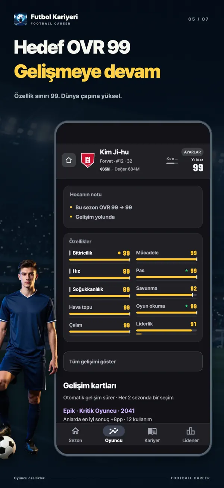
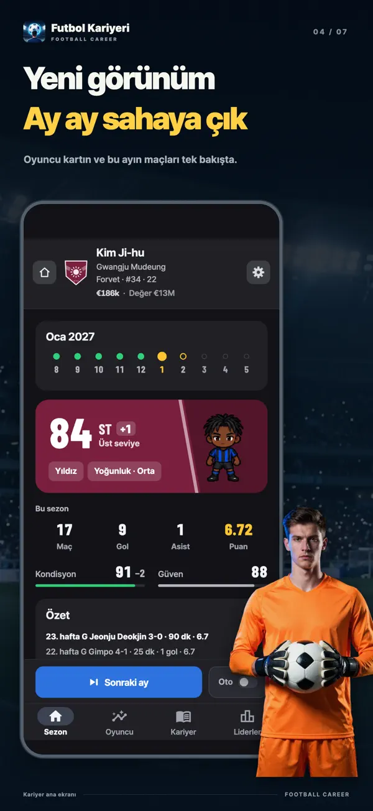
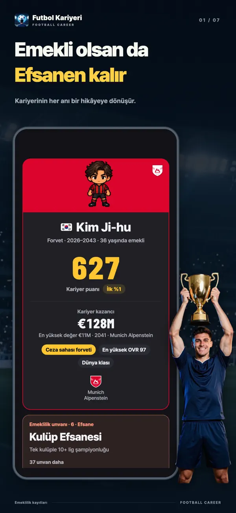
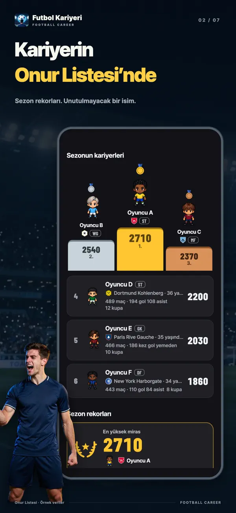
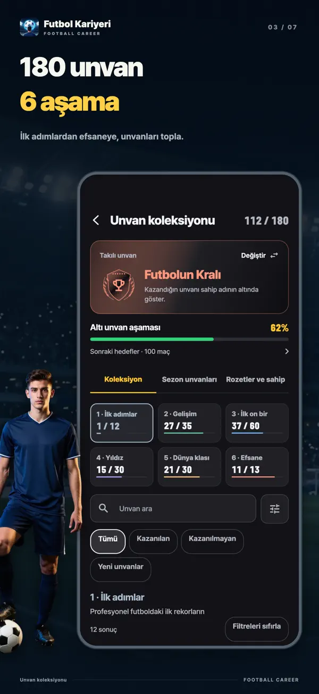
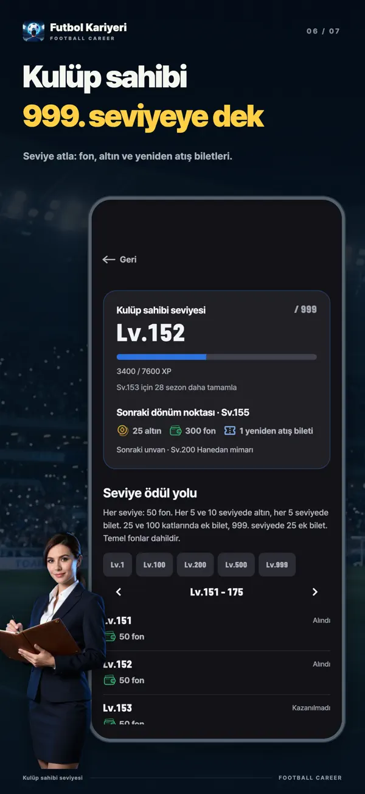
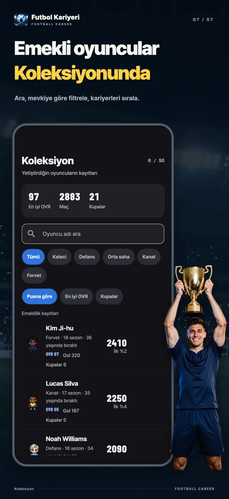

- YT Lab
- Futbol Kariyer Simülatörü

Futbol Kariyer Simülatörü Tek bir kart kariyerini değiştirebilir
İki sezonda bir, aynı nadirlikteki üç gelişim kartından birini seç. Özelliklerini hemen mi artıracaksın, gizli tavanlarını mı yükselteceksin, yoksa bir hedefi tamamlayıp daha büyük ödül mü kazanacaksın? Bu futbol kariyer simülasyonunda on yedi yaşındaki bir altyapı oyuncusunu emekliliğine kadar geliştir.
Bir sonraki gelişimini seç
27 yaşında Forvet OVR 96Her kartı bir kez yenileyebilirsin. Nadirliği değişmez.
Buradaki kartlar ve hesaplamalar uygulamadakilerle aynı. 27 yaşındaki yıldız Forvetin en nadir tur olan Legend ile karşılaştığı anı dene. Yenilemeler ve sonraki çekilişler de uygulamanın kart havuzlarını ve olasılıklarını kullanır. Her deneme aynı oyuncuyla yeniden başlar.


İndirmesi ücretsizdir; uygulama içi satın almalar içerir. iOS 15 ve üzeri iPhone ve iPad’lerde, Android 7.0 ve üzeri cihazlarda oynanır.
İki sezonda bir. Üç kart. Tek seçim.
Oynadıkça özelliklerin otomatik gelişir. Gelişim kartları buna kendi seçimini ekler. Başlangıçta ve sonrasında iki sezonda bir, aynı nadirlikte ama farklı ailelerden üç kart gelir; birini alırsın. Nadirlik yükseldikçe etkiler güçlenir. İlk seçimin kesinlikle Epik olur.
Anında güçlen
Kartı seçtiğin anda özelliklerin artar. Odak Karşılığını Verir, bir ana özelliğe +6 ve tavanına +3 verir. Açıkları Kapat, en düşük ana ve yardımcı özelliklerini ayrı ayrı 4 artırır.
Sınırlarını genişlet
Her özelliğin otomatik gelişimin durduğu gizli bir tavanı vardır. Biraz Potansiyel, Açılan Potansiyel ve Potansiyel Atılımı bu tavanı yükseltir. Kartlarla tavanı 95’e kadar çıkarabilirsin.
Ödülünü sahada kazan
Gol Avcısı her 5 golde Bitiricilik +1, Maçın Yıldızı her 2 MOM ödülünde bir özelliğe +2 verir. Yükselmeye Hazır ise 30 maça çıktığında bir ana özelliğe +8 kazandırır. Ödülü sahada hak etmen gerekir.
Kazanmak için bir şeyden vazgeç
Patlayıcı Sprint, Hava topu −3 karşılığında Hız +8 verir. Şeytani Yetenek, bir yardımcı özelliği 3 düşürürken ana özellik tavanını +12, özelliği +10 artırır. Her kazancın bir bedeli var.
Sahada daha uzun kal
İkinci Zirve, üç sezon boyunca yaşlanmaya bağlı gerilemeyi yarıya indirir ve kariyerine 2 yıl ekler. Son Alev üç ana özelliğe +6 verir, ancak o sezonun sonunda emekli olursun.
Kart yenilemek ücretsiz
Kart hoşuna gitmediyse tek tek yenileyebilirsin. Nadirliği aynı kalır; yeni kart, diğer iki kartla aynı aileden gelmez.
Yedek kulübesinden Ballon d’Or’a
Birinci ligde doğrudan ilk 11’e başlamazsın. Altyapı ve rezerv takımdan geç, A takım kulübesinden yerini kazan ve her sezon dünyanın en iyisine verilen Yılın dünya oyuncusu ödülünü hedefle. Ne kadar ileri gideceğini seçtiğin kartlar ve her sezonki performansın belirler.
- 17yaşında
Altyapı
On yedi yaşında altyapıda başlarsın. Altyapı Başlangıç Paketi ile on beş yaşında başlayabilirsin.
- 19yaşına kadar
Rezerv takım
A takım seviyesine yaklaştığında veya on dokuz yaşına geldiğinde rezerv takıma yükselirsin. Terfiler sezon sonunda belirlenir.
- 16–21lige göre ilk maç
A takım kulübesinden ilk 11’e
İlk maça çıkış yaşı lige göre değişir. Yaş, yetenek ve sezon puanı şartlarını sağladığında A takıma yükselirsin. Oynama süreni teknik direktörün güveni belirler.
- Yazsezon bitince
Transfer ve sözleşme yenileme
Transfer iste veya gelen tekliflerden birini seç. Menajerinle birlikte maaşını, İlk 11 sözü ve Serbest kalma maddesi gibi sözleşme koşullarını görüş.
- 18+A takımda
Milli takım
On sekiz yaş ve üzerindeki A takım oyuncuları milli takıma çağrılabilir. Dünya Turnuvası ve kıta turnuvaları iki yılda bir dönüşümlü düzenlenir.
- 36–41mevkiye göre
Emeklilik ve geride bıraktıkların
Varsayılan olarak Kanat oyuncuları 36, Kaleciler 41 yaşına kadar oynar. Kartlar ve olaylar kariyerini uzatabilir; istersen daha erken de emekli olabilirsin.
Bir ay oyna, gelişimini gör
Bir sezon ağustostan mayısa kadar on ay ve 38 maç sürer. Maça çıkma, gol, asist, gol yememe, MOM ve maç puanları o ayki gelişimine dönüşür. Hangi özelliğinin ne kadar arttığını rakamlarla görürsün. Ay ay ilerle veya sezonu otomatik oynat.
Aylık gelişimÇalım 57 → 58 +1
İyi bir ay, Ayın oyuncusu, Ayın takımı veya Kaleciler için Ayın kurtarışı ödülünü getirebilir. Kararı gizli bir çekiliş değil, performansın verir. Sezon sonunda Gol kralı, Sezonun 11'i, Yılın oyuncusu ve hatta Yılın dünya oyuncusu ödülünü hedefleyebilirsin.
Oyundan ekranlar







Futbola farklı bir yerden bak
Tek bir futbolcunun kariyeri
Kadro ekranı, taktik tahtası veya transfer bütçesi yok. Oynama süreni teknik direktör verir; teknik direktör değişince aranan oyuncu tipi de değişebilir.
Seçmeden önce olasılıkları gör
Sezon içinde karşılaştığın durumlarda, her seçeneğin üç olası sonucunu karar vermeden önce çubuklar ve yüzdelerle görürsün. Özelliklerinin, teknik direktörün güveninin, kondisyonunun ve gelişim kartlarının bu olasılıkları nasıl değiştirdiğini de inceleyebilirsin.
Her ligde başka bir kariyer
İngiltere, İspanya, Almanya, İtalya ve Fransa’dan Kore, Japonya ve Güney Amerika’ya uzanan ligler. İlk maça çıkış yaşı, maaşlar ve yabancı oyuncu kotaları lige göre değişir. Lig, kulüp, oyuncu ve teknik direktör adlarının tamamı kurgusaldır.
Futbolu bırakırsın, rekorların kalır
Kariyer toplamların ve altı eksenli değerlendirmen kalır: Kalite, Katkı, Süreklilik, Ödüller, Kupalar ve Sahne. Oyunun kurallarıyla simüle edilmiş 20.000 kariyer arasında hangi yüzdelik dilimde olduğunu görürsün. Tamamlanan kariyerler haftalık, aylık ve tüm zamanlar sıralamalarına, ayrıca sezonluk Onur Listesi’ne girer.
Sık sorulan sorular
- Ücretsiz mi?
- Ücretsiz indirip emekliliğe kadar oynayabilirsin. Gelişim kartları ve kart yenilemeleri de ücretsizdir. Reklamları kaldır, Mevki paketi, Altyapı Başlangıç Paketi, Destekçi paketi, altın ve yeniden zar atma biletleri isteğe bağlı satın almalardır. Başlangıç özellikleri için ücretsiz, reklamlı veya biletli zar atışlarında olasılıklar aynıdır.
- İnternetsiz oynayabilir miyim?
- Kariyerin cihazında oynanır ve kaydedilir; çevrimdışı devam edebilirsin. Sıralamalar, satın almalar, altın harcama ve cihaz aktarımı için internet gerekir.
- PC’de veya tarayıcıda oynayabilir miyim?
- Oyun iPhone, iPad ve Android uygulamasıdır. Tarayıcıda oynanan bir sürümü yoktur; bu sayfada gelişim kartlarını deneyebilirsin.
- Hangi mevkilerde oynayabilirim?
- Kaleci, Defans, Orta saha, Kanat ve Forvet. Kaleci ve Forvet ücretsizdir; diğer üçü Mevki paketi ile açılır. Her mevkide yedi oyun tarzı, toplamda 35 tarz vardır ve hepsi ücretsizdir.
- Aynı anda kaç kariyer oynayabilirim?
- Üç kariyer yuvasıyla aynı anda üç oyuncu geliştirebilirsin. Milliyetin ilk ligini ve milli takımını belirler.
- Gerçek oyuncular veya kulüpler var mı?
- Hayır. Oyundaki tüm ligler, kulüpler, oyuncular ve teknik direktörler kurgusaldır.
- Adım sıralamada görünür mü?
- Tamamlanan kariyerler sıralamaya girer, ancak bunu istediğin zaman kapatabilirsin. Kendin değiştirdiğin adlar yalnızca onayınla herkese gösterilir.